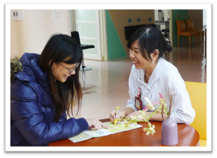
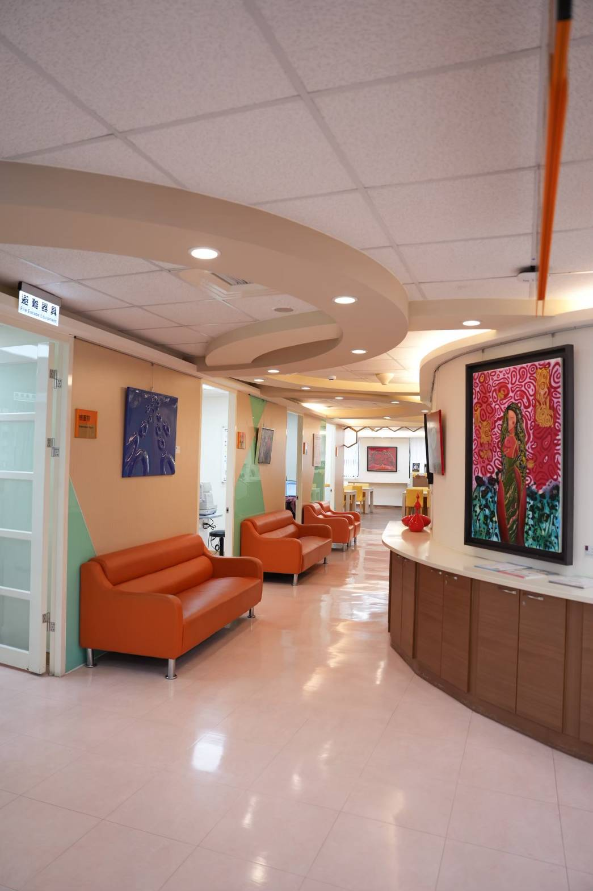
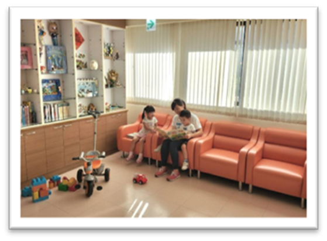

10
婦女寬心健檢
Women's Easeful Health Screening
為女性而設計的健檢空間，把預防做在發病之前，把守護做在症狀之前。

26
10
一個專為女性打造的寬心健檢中心
女性專屬動線 × 幼兒臨托陪伴 × 一站式四癌篩檢
Designed for Her, Eased for Her Family
婦幼院區健康管理中心，從每個細節回應女性不同生命階段的需求。空間設計兼顧隱私、舒適與動線流暢性，營造安心且友善的檢查環境。
我們同時提供貼心支持服務，包括預約臨托保母及安排志工陪伴，協助育兒中的女性無後顧之憂完成健康檢查。
我們相信，每一位女性，都值得擁有一段為自己安排的時間。
A screening center built around her body, her time, and the toddler she didn't have to leave behind.

專屬健檢空間
專屬健檢 APP

臨托保母陪伴
第二大重點 女性癌症預防
子宮頸癌、乳癌、口腔癌、大腸癌──國家四癌篩檢，婦幼院區提供齊備服務。我們特別發展子宮內膜癌篩檢方案，補強女性近年發生率上升的隱形威脅；女子醫門診整合婦產科親善、乳房外科、身心科、泌尿科，建立一站式跨科共照。
27